【行者无疆·津彩化韵】年画溯古承新韵，葫芦烙彩续匠心
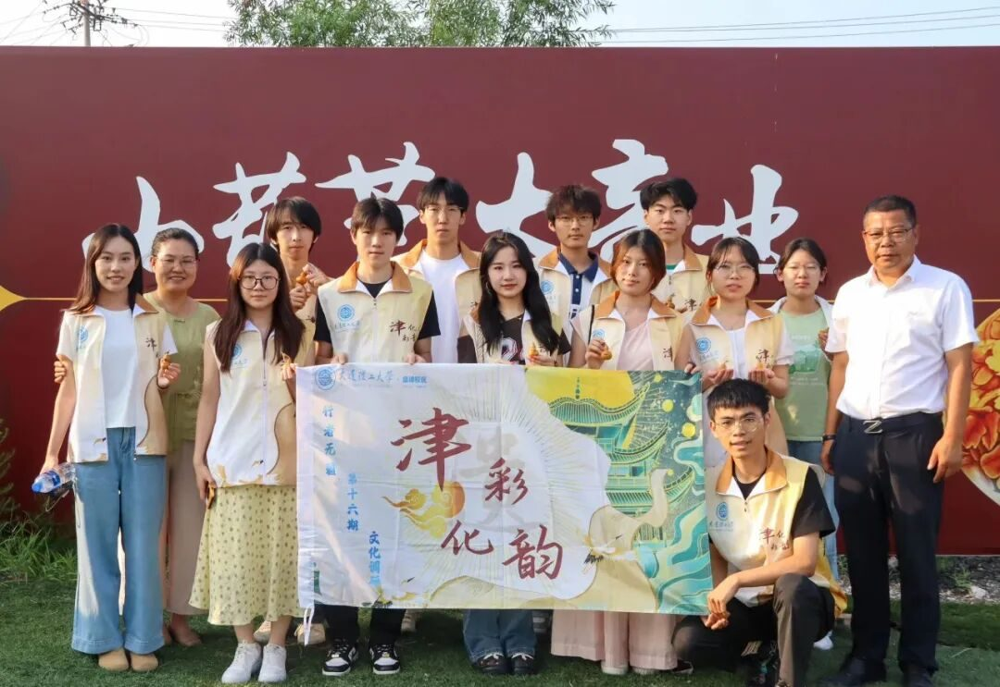
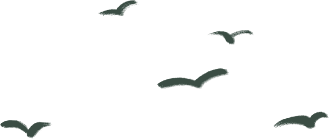
年画溯古承新韵
葫芦烙彩续匠心
Heritage Prints, Craft Renewed
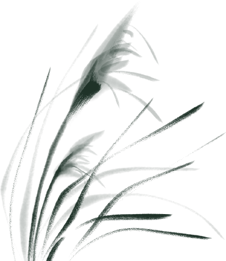
非遗传承，在守正创新中焕发活力
请走进杨柳青木版年画的历史长卷
触摸葫芦烙画的指尖温度
感受传统技艺与时代共振的力量
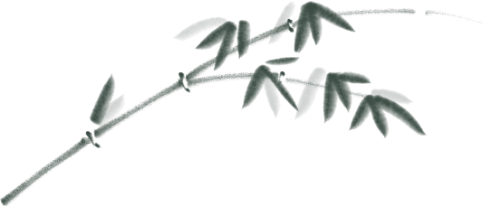
Intangible heritage thrives
staying true while innovating
Explorers stepped the history of
Yangliuqing woodblock prints
Felt the warmth through
gourd pyrography
Discovering how traditional
crafts resonate with our times
向右滑动查看英文版本
杨柳青木版年画博物馆
Yangliuqing Woodblock Print Museum
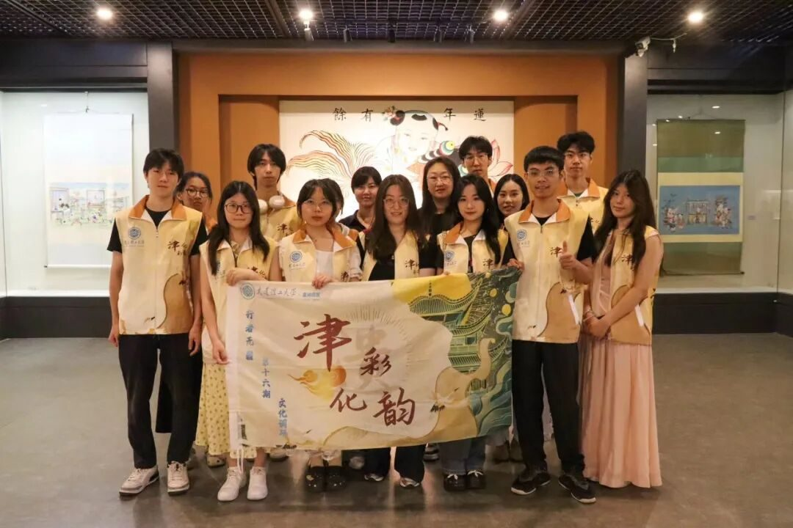
在这里，行者们在青年传承人何老师、馆长王老师的指引下，以年画为引，参观了一场写着民俗与匠心的文化盛宴。
首先，何老师带大家深入年画作品创作的工作室，指着一件件工具细述“勾、刻、印、绘、裱”五步工艺如何让木板与画笔共舞，并分享了自己在彩绘创作上的心得。
随后，行者们来到展览室，两位老师就着一幅幅作品，逐次讲解背后的历史渊源与非遗技艺，从《莲年有余》的吉祥寓意到《福禄寿八路进财》的高超技法，红得热烈，绿的鲜活，每一幅年画都是历史的切片。
当谈到木版年画在今天的传承时，王老师指出信息时代为此带来了很大帮助，比如将经典画作导入专门软件，便可快速提取出其配色种类与比例，有助于非遗传承人们总结学习其中蕴含的美学原理。
参观的最后，王老师站在古时最著名的两家画店的仿址前，为大家揭示“画店署名”背后的版权智慧——木版之“版”，既是技艺载体，亦是文化产权的原始印记。
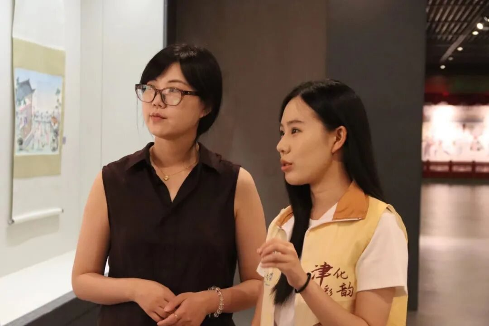
Guided by young inheritor Ms. He and curator Mr. Wang, the explorers experienced a cultural feast of folk art and craftsmanship through woodblock prints.
First, Ms. He led them into the workshop. Pointing to tools, she detailed the five steps—drafting, carving, printing, painting, mounting—that bring wood and brush to life, sharing insights on color painting.
Next, in the exhibition hall, both teachers explained the history and techniques behind iconic prints. From the auspicious Lotus and Abundance to the masterful Fortune, Prosperity, Longevity and Wealth, each vibrant piece offered a slice of history.
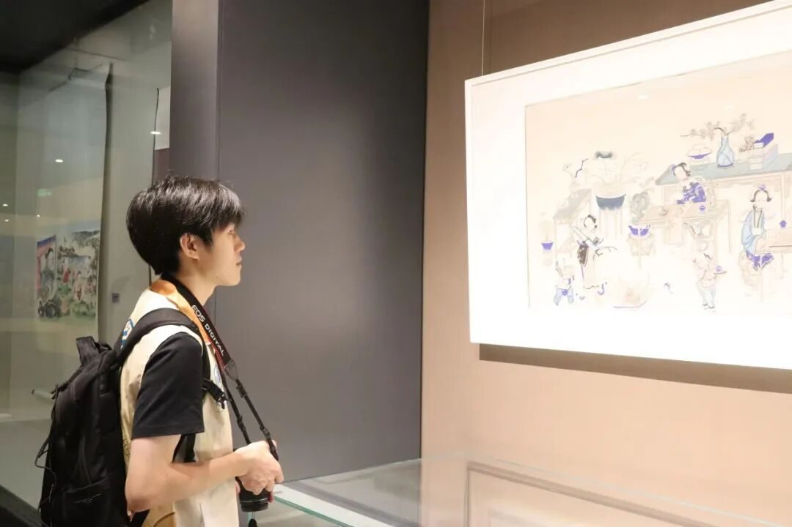
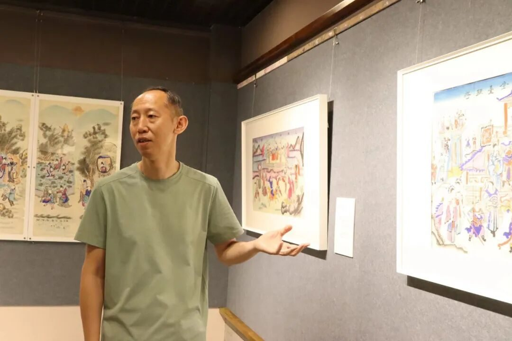
On modern preservation, Mr. Wang noted technology’s role: software analyzes classic works, extracting color palettes and ratios, helping artisans grasp their aesthetic principles.
Finally, before replica historic shops, Mr. Wang revealed the wisdom of "shop signatures"—the woodblock ("版") as both artistic medium and early copyright mark.
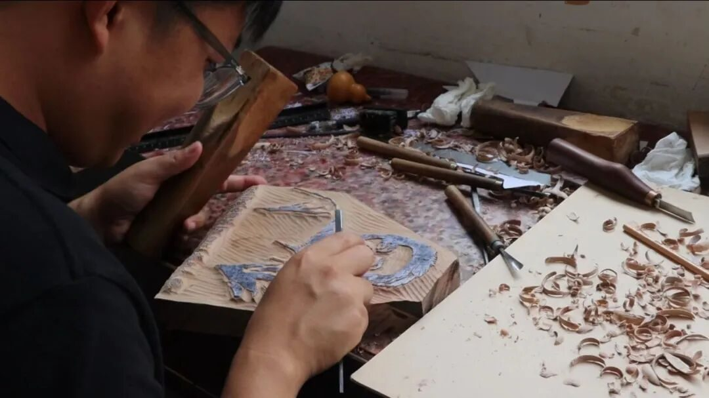
向右滑动查看英文版本
太平葫芦特色产业园
Tianjin Taiping Gourd Industrial Park
下午，行者们来到葫芦烙画工坊，第五代传承人房老师为大家讲解了这项技艺的基本步骤。从勾线的“意在笔先”，到烙刻的“轻重缓急”，每一步皆暗藏玄机。
在房老师的指导下，行者们亲手尝试制作自己的烙画葫芦。握住电烙笔，轻轻转动葫芦，一笔笔细腻的线条缓缓呈现在葫芦皮上，在电烙笔与葫芦接触的“滋滋”声中，一幅幅充满个人印记的作品渐次成型。这不是单纯的绘画，而是时间与耐性在器物上的痕迹。每一道烙印，都是工匠精神的生动体现。随后，行者们采访了第四代传承人徐林成老师，了解到他的非遗传承之路：从创办农民就业创业孵化基地，到开发各色各样的葫芦茶具、文创摆件，热情与创新让传统技艺成为带动区域致富的“金钥匙”。
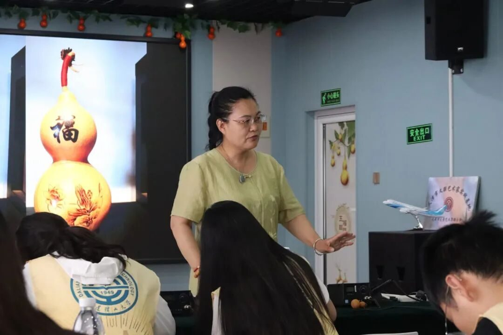
That afternoon, the explorers visited a gourd pyrography workshop. Fifth-generation inheritor, Master Fang, explained the craft's core steps—from conceptualizing designs before drawing to mastering the pyrography pen's pressure and rhythm, each stage holding its depth.
Guided by Master Fang, the explorers tried pyrography themselves. Holding the pen, turning gourds gently, fine lines emerged under its sizzle. Each piece, bearing unique marks, became a testament to patience and time—not mere drawing, but imprinting dedication onto the craft.
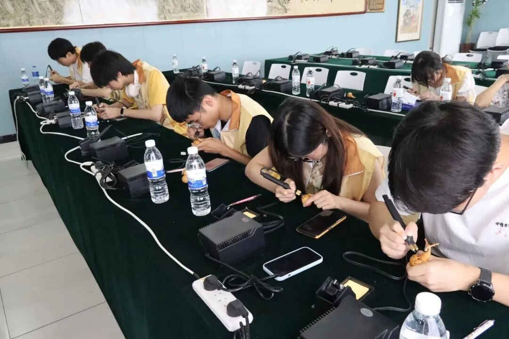
Later, they interviewed fourth-generation inheritor Xu Lincheng. He shared his journey: founding incubation bases for rural employment, creating cultural tea sets and ornaments. Passion and innovation turned heritage into a "golden key" for local prosperity.
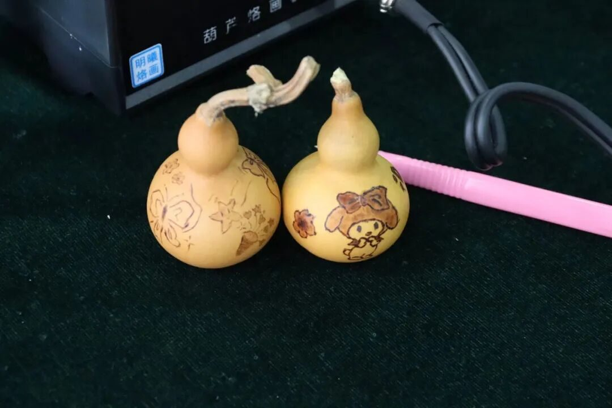
向右滑动查看英文版本
从木版年画的数字传承
到葫芦烙画的产业创新
非遗的活力既源于对传统的坚守
更来自与时俱进的突破
这份探索
是行者对文化基因的解码
更是对“见人见物见生活”
传承理念的生动诠释
来源 | 行者无疆实践团
图片 | 行者无疆实践团
文字 | 韩可欣
编辑 | 姜骅洲
审核 | 张瑶琪 杩健辉 李凌志
责编 | 邹靓靓 周 亮